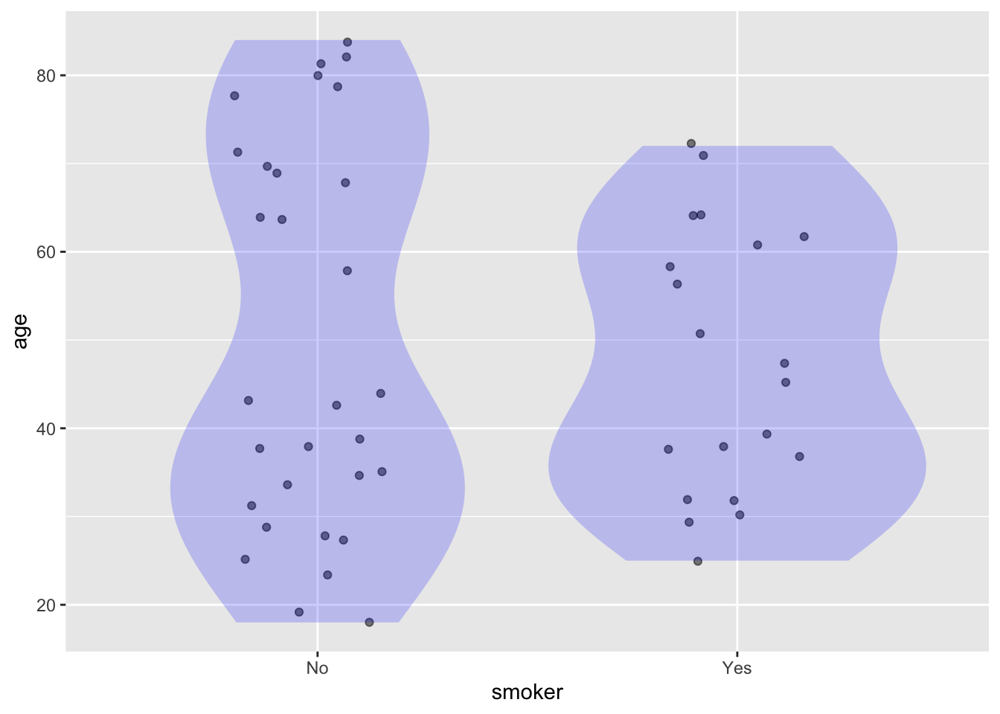
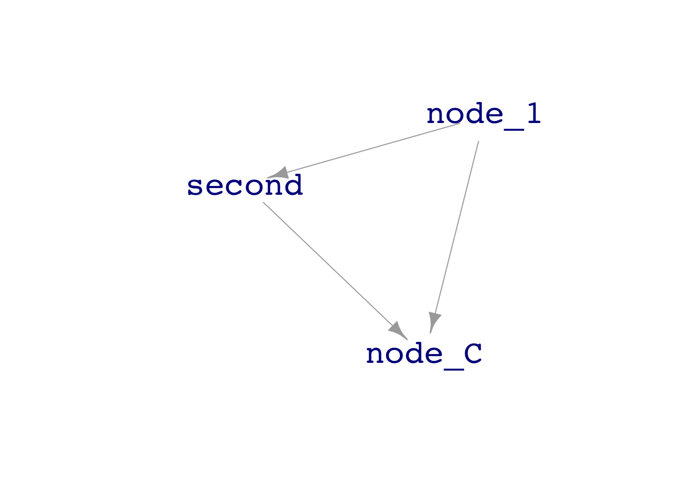

library(mosaic)
library(math300)
data("Whickham", package="mosaicData")Math 300 Lesson 20 Notes
Simulation and sampling variation
Overview
The word “data” comes from the Latin datum, meaning “something given.” Statistical thinkers remember that there is something behind the gift: the units of observation, the mechanism that creates the real relationships among the variables, and the process of sampling from the available units of observation those recorded in the data frame. The sampling process leaves traces—called sampling variation*—in the models we construct from data. This Lesson gives you simulation tools to observe and quantify sampling variation. We will use these throughout the Lessons that follow.
Reading
Objectives
20.1 Construct sampling trials from a data frame or a simulation.
20.2 Replicate sampling trials and calculate the amount of sampling variability.
20.3 Recognize properties of directed, acyclic graphs (DAGs).
Libraries
Lesson
In the real world, creating a sample can be a laborious process, perhaps requiring field, experimental work, or building instrumentation. We’re going to skip the hard stuff, and simply use the R function sample() which can create a sample from a data frame or a DAG (or other things such as the 1:10 in the example).
sample(1:10, size = 4)[1] 8 4 9 3Note: The size= argument specifies the size of the sample to be collected. In the text, we follow statistical convention and always refer to the sample size with the letter \(n\), as in “collect a sample of size \(n=6\). But sample() does not use \(n\) as the name of the size-setting argument.
Exercise 1
Task 1.1
Write the R command to take a sample of size \(n = 5\) from the Whickham data frame.
# for Task 1.1Answer these questions:
- Does
sample()select from the rows or the columns of a data frame? - Will the same
sample()command, when repeated, return the same sample?
Task 1.2
Compare the ages of the smokers and non-smokers in Whickham with this model:
# lm(age ~ smoker, data=Whickham) %>% coef()Note the smokerYes coefficient is about -4.0. Interpret the smokerYes coefficient in everyday language to explain what it says about the ages of smokers and non-smokers.
Your answer:
Task 1.3
Make an appropriate RESPEX-format graph of Whickham suited to the model age ~ smoker. Add a violin layer to the data layer. (Make sure to set the transparency alpha and the fill and color for an intelligible display.)
# For task 1.3From the graph, explain in everyday language why the violin is so narrow for smokers aged 65 and above.
Your answer:
Why is there a waist in the violin for non-smokers at age 50, while the violin for smokers has a corresponding bulge? Explain in everyday language.
Your answer:
Exercise 2
Task 2.1
Write an R statement that will find the sample size \(n\) of Whickham.
# Find sample size of `Whickham`.In the chunk below, copy the code from Task 1.1 to display the coefficients from the model age ~ smoker. But modify the code so that instead of using all of Whickham as training data, a sample size of \(n=50\).
# Copy your code from Task 1.1, but set the sample size to n=50.Run the above chunk several times, each time noting the coefficient smokerYes. The coefficient will differ from run to run: that’s sampling variation. Which of these statements best describes the pattern? (Mark your answer in bold.)
- The coefficients are always less than -4.0.
- The coefficients are always greater than -4.0
- The coefficients are scattered on both sides of -4.0.
Task 2.2
Copy your graphics code from Task 1.2, but modify it to set the sample size to \(n=50\).
# Copy the graphics code from Task 1.2, modified for a sample of size n=50.
ggplot(sample(Whickham, size=50), aes(x=smoker, y=age)) +
geom_jitter(alpha=0.5, width=0.2) +
geom_violin(alpha=0.2, fill="blue", color=NA)
Repeat the command many times, each time checking the violin for signs of the non-smoker waist and smoker bulge at around age 50.
- Does the waist-bulge pattern appear reliably for a sample of size \(n=50\)?
- Find a sample size at which the waist-bulge pattern occurs at least 3/4 of the time?
Your answer here:
Exercise 3
In this exercise, you will practice with the do() function that lets you run multiple replications of a trial.
Task 3.1
In this task, the trial will be very simple: Fit the age ~ smoker model to Whickham and display the coefficients. The code to run a trial is inside the curly braces { }. The do() function goes before the curly braces. There is always a * sign between do() and the curly braces.
# Trials <- do(5) * { lm(age ~ smoker, data=Whickham) %>% coef() }
# TrialsThe collection of Trials is a data frame that includes the results from each trial, stacked one above the next.
You may be surprised to see that the columns of Trials repeat the same number over and over again. Explain what it is about the command inside the { } that causes the result to be the same every time the trial is run. (See the next task if you can’t figure it out.)
Your answer here:
Task 3.2
The typical use for do() is to repeat trials, each of which involves some random component, such as drawing a sample.
Modify the code from Task 3.1 so that the training data is a sample of size \(n=50\) from Whickham. Also, modify the argument to do() so that there will be 10 rows in Trials.
# modify this code
# Trials <- do(5) * { lm(age ~ smoker, data=Whickham) %>% coef() }
# TrialsConfirm that the coefficients vary from trial to trial, that is, from one sample to another.
Try several different sample sizes (that is, \(n=100, 200, 300\)). Does the amount of trial-to-trial variation in the coefficients get bigger or smaller as the sample size increases?
Your answer here:
Exercise 4
You can use sample() to take samples from a DAG. For instance, consider dag02:
dag_draw(dag02)print(dag02)x ~ exo()
a ~ exo()
y ~ 3 * x - 1.5 * a + 5 + exo()sample(dag02, size=5)# A tibble: 5 × 3
x a y
<dbl> <dbl> <dbl>
1 -0.484 -2.02 8.46
2 -0.494 0.537 3.44
3 -0.227 -1.15 5.68
4 0.342 -0.888 7.64
5 -0.487 -0.302 4.35Task 4.1
Here is the code for a single trial in which a sample of size \(n=5\) is collected from dag02 and used to train the model y ~ a + x, which corresponds exactly to the formula for y in the DAG.
# lm(y ~ a + x, data=sample(dag02, size=5)) %>% coef()Notice that the coefficients roughly match those in the dag02 formula for y.
Task 4.2
Copy from Task 4.1 the code to run one trial. (Make sure to take out the comment symbol!)
Then modify the copied code to place the one-trial code in curly braces, and use do(10)* to run ten trials.
# For Task 4.2By trial and error, find a sample size \(n\) that’s large enough so that the coefficients from the trials reliably match those in the y formula from dag02, varying by at most by \(\pm 0.1\). How big a sample is required for this?
Your answer here:
Repeat the previous, but find a sample size large enough so that the coefficients differ from those in the y formula by at most \(\pm 0.01\). How big a sample is required for this?
Your answer here:
Going further
You can create your own DAGs. Use dag_make(), which takes tilde expressions as arguments. The left-hand side of each tilde expression is the name of a node. The right-hand side is an arithmetical formula to create a value from that node from the values of previous nodes or exogenous random number generators like exo(). (See the help page ?dag_make for more information.) For example:
my_own_dag <- dag_make(
node_1 ~ exo(0.01) + 3,
second ~ 2*node_1 + exo(0.1) - 5,
node_C ~ 10*(node_1 + second) + exo()
)
dag_draw(my_own_dag)
print(my_own_dag)node_1 ~ exo(0.01) + 3
second ~ 2 * node_1 + exo(0.1) - 5
node_C ~ 10 * (node_1 + second) + exo()sample(my_own_dag, size=10)# A tibble: 10 × 3
node_1 second node_C
<dbl> <dbl> <dbl>
1 3.00 1.01 39.4
2 2.99 0.713 37.9
3 3.00 1.03 38.4
4 3.00 0.940 39.8
5 2.99 0.877 37.8
6 3.00 0.988 40.4
7 2.98 0.896 39.7
8 3.01 1.11 41.2
9 3.01 0.960 40.2
10 2.99 0.915 40.3Notice that by using a node on the right-hand side of a tilde expression only when it has already been created by a previous tilde expression, you guarantee that the graph will be acyclic.
Optional task
Create a DAG that has the same arrangement of causal connections as “Professor Butts and the Self-Operating Napkin,” illustrated below:

Professor Butts and the Self-Operating Napkin (1931). Soup_spoon (A) is raised to mouth, pulling string (B) and thereby jerking ladle (C), which throws cracker (D) past toucan (E). Toucan jumps after cracker and perch (F) tilts, upsetting seeds (G) into pail (H). Extra weight in pail pulls cord (I), which opens and ignites lighter (J), setting off skyrocket (K), which causes sickle (L) to cut string_m (M), allowing pendulum with attached napkin to swing back and forth, thereby wiping_chin.
Documenting software
- File creation date: 2022-12-27
- R version 4.2.1 (2022-06-23)